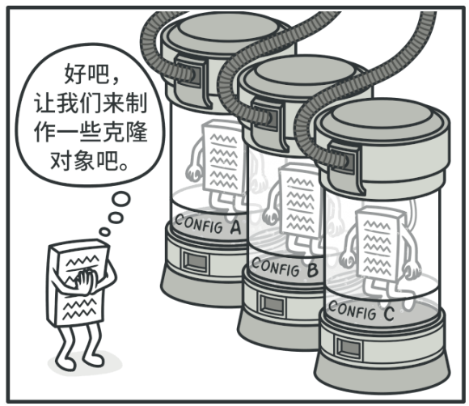
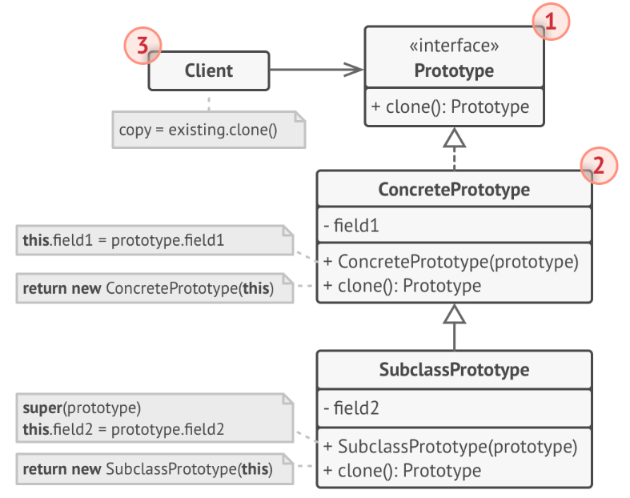
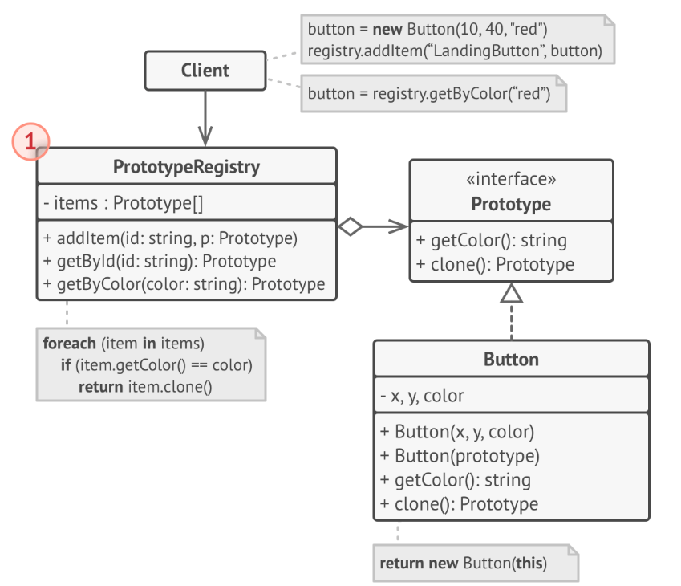

0 UML类图关系
依赖关系：一种使用关系，一个类的实现需要另一个类的协助
- 代码表现：局部变量、方法的参数或静态方法的调用；
- 箭头方向：带虚线箭头，箭头从使用类指向被使用类；
1
2
3
4
5
6classDiagram
Programmer ..> Computer
class Programmer {
-name: String
+coding(Computer c)
}关联关系：一种引用关系，使一个类知道另一个类的属性和方法；如老师与学生；
代码表现：成员变量；
箭头方向：单向关联（箭头实线指向被拥有者），双向关联（可双箭头/也可都没有）
1
2
3
4
5
6
7
8
9
10classDiagram
Teacher--Student
Student-->Course
class Teacher {
-students: List<Student>
}
class Student {
-teacher: Teacher
-courses: List<Course>
}
聚合关系：关联关系的一种，整体与与部分的关系，且部分可以离开整体而单独存在。
代码表现：成员变量
箭头方向：带空心菱形的实心线，菱形指向整体
1
2
3
4
5classDiagram
School o-- Teacher
class School {
-teacher: List<Teacher>
}
组合关系：联关系的一种，整体与与部分的关系，且部分不可以离开整体而单独存在。
代码表现：成员变量
箭头方向：带实心菱形的实线，菱形指向整体
1
2
3
4
5classDiagram
Body *-- Brain
class Body {
-brain: Brain
}
实现关系：接口和实现类，带三角箭头的实线指向接口；
泛化关系：父子类之间的继承关系，带三角箭头的虚线指向父类；
1
2
3
4
5classDiagram
University <|.. Tsinghua
University <|.. Peking
Animal<|--Bird
Animal<|--Lion
1 单例模式
核心思想：保证一个类只有一个实例，并提供一个全局访问点来访问这个实例。
优点：
- 全局控制：可以严格的控制客户怎样访问/何时访问，即对唯一实例的受控访问。
- 节省资源：单例避免多次创建了相同的对象，节省了系统资源，且多个模块可以通过单例实例共享数据。
- 懒加载：在需要时才实例化，可以提高程序的性能。
基本组成：私有的构造函数、静态实例变量，公有的静态方法；
1
2
3
4
5
6classDiagram
class Singleton{
-instance: Singleton
- Singleton()
+ GetInstance()
}实现：
饿汉模式：在类加载时就已经完成了创建，可能造成资源浪费，但一般不存在多个线程同时尝试初始化实例的问题。
1
2
3
4
5
6
7
8
9
10
11
12// hpp
class Singleton {
public:
static Singleton& getInstance() { return s_instance; }
Singleton(const Singleton&) = delete;
Singleton& operator=(const Singleton&) = delete;
private:
Singleton() = default;
static Singleton s_instance;
}
// cpp
Singleton Singleton::s_instance;懒汉模式：首次调用才被创建，避免资源浪费（如果Instance类很大）
1
2
3
4
5
6
7
8
9
10
11
12
13
14
15
16
17
18
19
20
21
22// Double-Checked Locking
Class Singleton {
public:
static Singleton* getInstance() {
if (!p_instance) {
lock_guard<mutex> lck(mtx);
if (!p_instance) {
p_instance = new Singleton();
}
}
return p_instance;
}
Singleton(const Singleton&) = delete;
Singleton& operator=(const Singleton&) = delete;
private:
Singleton() = default;
static Singleton* p_singleton;
static mutex mtx;
};
// cpp
Singleton* Singleton::p_singleton = nullptr;
mutex Singleton::mtx;C++11标准规定了局部静态变量的初始化必须是线程安全的，因此可利用局部静态变量来实现单例。
当多个线程同时到达局部静态变量的初始化语句时，保证只有一个线程将执行初始化代码，而其他线程将等待这个初始化完成。
1
2
3
4
5
6
7
8
9
10
11
12// Meyer's Singleton
class Singleton {
public:
static Singleton& getInstance() {
static Singleton s_instance;
return s_instance;
}
Singleton(const Singleton&) = delete;
Singleton& operator=(const Singleton&) = delete;
private:
Singleton() = default;
};
2 工厂模式
2.1 简单工厂模式
- 核心思想：将各种产品对象的创建过程封装在一个工厂类中。
- 基本组成：工厂、抽象产品（接口）、具体产品；
- 缺点：对修改不封闭，新增产品需要修改工厂，违反了OCP原则；
2.2 工厂模式
- 核心思想：引入抽象工厂和具体工厂的概念，每个具体工厂负责创建对应的具体产品，新增产品秩只需添加新的工厂类而无需修改原来的代码；
- 基本组成：抽象工厂（接口）、具体工厂、抽象产品（接口）、具体产品；
- 优点：新增产品更灵活、支持扩展，符合开闭原则；
- 应用场景：
- Spring 框架中的 Bean 工厂：通过配置文件或注解，Spring 可以根据配置信息动态地创建和管理对象。
- JDBC 中的 Connection 工厂：在 Java 数据库连接中，
DriverManager使用工厂方法模式来创建数据库连接。不同的数据库驱动（如 MySQL、PostgreSQL 等）都有对应的工厂来创建连接。
2.3 抽象工厂模式
核心思想：
- 简单工厂，一个工厂创建所有具体产品；
- 工厂方法，一个工厂创建一个具体产品；
- 抽象工厂，一个工厂创建一类具体产品；
基本组成：
1
2
3
4
5
6
7
8
9
10
11
12
13
14
15
16
17
18// Simple Factory
factory.create('A'); // product A
factory.create('B'); // product B
// Factory Method
// factory_ab <|-- factory_a
// factory_ab <|-- factory_b
factory_a.create(); // product A
factory_b.create(); // product B
// Abstract Factory
// factory <|-- factory_1/2
// product_a <|-- product_a_1/2
// product_b <|-- product_b_1/2
factory_1.create_a(); // product A1
factory_1.create_b(); // product B1
factory_2.create_a(); // product A2
factory_2.create_b(); // product B2
3 建造者模式
核心思想：将对象的构建过程分为多个步骤，并为每个步骤定义一个抽象的接口。具体的构建过程由实现了这些接口的具体建造者类来完成。
而指导者类负责按照一定的顺序来执行构建步骤，最终生成产品。
基本组成：
1
2
3
4
5
6
7
8
9
10
11
12
13
14
15
16
17
18
19
20
21
22
23classDiagram
AbstractBuilder<|--Builder1
AbstractBuilder<|--Builder2
AbstractProduct<|--Product1
AbstractProduct<|--Product2
Director o--AbstractBuilder
Builder1 ..> Product1
Builder2 ..> Product2
class AbstractBuilder{
- product: AbstractProduct
+BuildPartA()
+BuildPartB()
+GetProuct()
}
class Director{
-builder: AbstractBuilder
+construct()
}
class AbstractProduct {
-partA
-partB
}1
2
3
4
5
6
7
8
9
10
11
12
13
14
15
16// Director
class Director {
public:
explicit Director(Builder* builder): builder_(builder) {}
void construct() {
builder_->BuildPartA();
builder_->BuildPartB();
}
private:
Builder* builder_;
}
// Client
Builder* builder = new ConcreteBuilder();
Director* director = new Director(builder);
director->construct();
Product product = builder->GetProduct();优点：
- 封装性好，构建和表示分离；
- 扩展性好，各个具体的建造者相互独立，利于系统解耦；
- 控制风险细节，客户端无需知道细节，建造者细化创建过程；
缺点：
- 产品的组成部分必须相同，限制了其使用范围；
- 产品内部发生变化，建造者需同步修改，后期维护成本较大；
4 原型模式
💬 意图
基于现有的对象创建新的对象，将原型对象的成员变量复制到新生成的对象中，而不需使代码依赖它们所属的类。
🙁 问题
- 直接复制对象（“从外部” 复制对象并非总是可行），必须知道对象所属的类才能创建复制品， 所以代码必须依赖该类；
- 此外，有时只知道对象所实现的接口， 而不知道其所属的具体类，比如向方法的某个参数传入实现了某个接口的任何对象；
😊 解决方案
原型模式将克隆过程委派给被克隆的实际对象。 模式为所有支持克隆的对象声明了一个通用接口， 该接口让你能够克隆对象， 同时又无需将代码和对象所属类耦合。
所有的类对 clone方法的实现都非常相似。 该方法会创建一个当前类的对象， 然后将原始对象所有的成员变量值复制到新建的类中。
支持克隆的对象即为原型。 当你的对象有几十个成员变量和几百种类型时， 对其预生成原型可以代替子类的构造（避免子类实例化的复杂，无需关心该实例是如何通过子类化构造出来的）。

其运作方式如下： 创建一系列不同类型的对象并不同的方式对其进行配置。 如果所需对象与预先配置的对象相同， 那么你只需克隆原型即可， 无需新建一个对象。
🚀 原型模式结构
基本实现

原型 （Prototype） 接口将对克隆方法进行声明。 在绝大多数情况下， 其中只会有一个名为
clone克隆的方法。具体原型 （Concrete Prototype） 类将实现克隆方法。 除了将原始对象的数据复制到克隆体中之外， 该方法有时还需处理克隆过程中的极端情况， 例如克隆关联对象和梳理递归依赖等等。
克隆方法通常只有一行代码： 使用
new运算符调用原型版本的构造函数。客户端 （Client） 可以复制实现了原型接口的任何对象。
原型注册表实现

- 原型注册表 （Prototype Registry） 提供了一种访问常用原型的简单方法， 其中存储了一系列可供随时复制的预生成对象。
💡 适用场景
如果你需要复制一些对象， 同时又希望代码独立于这些对象所属的具体类；
动态生成对象：原型模式允许在运行时动态生成对象的副本。
例如，在某些需要根据外部输入或者配置文件来创建对象的应用中，使用预生成原型可以简化对象的生成过程，因为你可以在运行时选择合适的原型进行复制，而不是靠硬编码的方式来决定使用哪个子类。
对象状态的复用：对于一些初始化资源消耗较大的对象，如那些需要从数据库加载数据的对象，新创建的对象可以自动继承其原型对象的状态；
🎲 优缺点
设计原则
OCP (Open/Closed Principle): 软件实体（类/模块/函数等）应该是可扩展的，但是不可修改的。
RAII (Resource Acquisition Is Initialization): 确保所有资源（如指针、文件句柄、网络连接等）都封装在类对象里，让对象的生命周期管理资源。
资源的获取（Allocation）应在对象构造时完成
资源的释放（Deallocation）自动在对象的析构时执行
异常安全：RAII保证无论对象是因为作用域结束还是因为异常而离开作用域，资源的释放将总是自动发生。
当C++程序中抛出一个异常时，程序控制流会从抛出异常的点跳转到能够处理该异常的捕捉点（catch block）。在这一过程中，程序会展开堆栈，退出当前作用域及其父作用域，直到找到合适的异常处理代码。在展开堆栈的过程中，局部对象会被销毁，其析构函数按照创建的逆序被调用。因此，RAII类的析构函数将负责释放其管理的资源，即使是在异常发生时。
优点：
- 代码更加简洁明了、易于维护；
- 自动资源管理、减少了资源泄露的风险；
- 提高了代码的异常安全性；